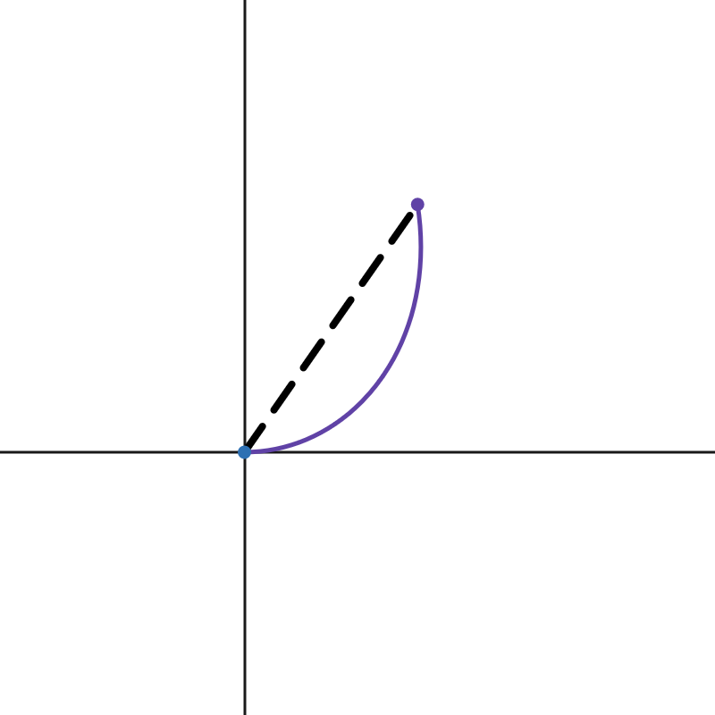

Under the Hood¶
Note
This page describes the algorithm behind Autopilot’s path-following algorithm. This knowledge is not necessary to understand how Autopilot works from the end user’s perspective and is only provided for those interested.
To see a live demo of the paths that Autopilot approaches, check out this Desmos graph. The purple dot represents the robot’s initial position.
Prerequisites¶
A general understanding of polar curves and calculus (Calc II is probably suitable for this) is recommended to understand what is about to happen.
Setup¶
The first thing that Autopilot does to prepare for the computations that follow is by transforming the robot’s current position into a position from the target’s point of view, with entry angle being counted as forwards (+x direction). This also places the target at the origin. This is important.
After all computations are done with velocity calculations, Autopilot undoes this transformation to return to a global coordinate frame.
Step 1: The curve¶
Consider the curve \(r=a\theta^b\). By playing with the parameter \(a\), the curve is scaled. By changing \(b\), the shape of the curve itself is different.
This curve has a variety of useful applications:
For all \(b \gt 0\), \(r\) equals 0 when \(\theta\) is zero. This means that following the curve inwards always reaches the origin (which is where the target is in a target coordinate frame). Reaching the target is good.
Modifying \(a\) only scales the curve. This means that if some point is placed on the cartesian plane and this curve is overlaid, scaling the curve by changing \(a\) can cause the curve to touch a. Generating a path that includes the current position is good.
The curve is always decreasing for smaller values of \(\theta\). As \(\theta\) approaches zero, the curve moves towards the center. Because \(\theta = 0\) is aligned with the positive x axis, entry angle is always respected, which is good.
The value for \(a\) must scale dynamically, but the value of \(b\) is left unrestricted. Autopilot chooses \(b\) to be 1. There are two reasons for this:
The curve is generally smooth. The “eyeball test” determines that the curve looks generally good enough to be followed, even at high speeds. There are no “sharp” corners.
The arc length of the curve is easily found. Curves with \(b \ne 1\) are much more difficult to solve for arc length. This is very important later.
Step 2: Scaling the curve¶
To determine the correct curve to use, the offset must be touching the curve. Otherwise, the curve doesn’t seem reasonable. To scale the curve, we must convert the current position into polar coordinates. We will refer to the angle part of the polar coordinate as \(\theta_1\) and the radius will be \(S\). Note that \(S\) is the distance from the target to the current position, or vice versa (it’s the magnitude of displacement).
Once the current position is in polar coordinates, multiplying the curve \(r = \theta\) by the scale factor of \(S \over \theta_1\). This works because when \(\theta = \theta_1\), the fraction \(\theta \over \theta_1\) cancels out and becomes 1, leaving \(S\) - the correct radius for the curve at that point.
Now the final equation for the curve is as follows:
\(r = {{ S \cdot \theta } \over \theta_1}\)
Note
This equation is never found in the code for Autopilot. This is just an explanation of what the curve is, and how it was developed.
Step 3: Finding direction¶
Autopilot doesn’t care what the curve is. During one call to calculate(),
the only part of the curve that matters right now is the direction that the
robot has to go in to follow the curve - the curve itself doesn’t matter.
To find the direction (in cartesian X/Y coordinates for velocity) of the curve, the curve needs to be converted to rectangular form with the following formulae:
\(x = r \cdot cos(\theta)\)
\(y = r \cdot sin(\theta)\)
Differentiating each term with respect to theta:
\({dx \over d\theta} = r \cdot -sin(\theta) + {dr \over d\theta} \cdot cos(\theta)\)
\({dy \over d\theta} = r \cdot cos(\theta) + {dr \over d\theta} \cdot sin(\theta)\)
To solve for \(dr \over d\theta\), we differentiate \(r = {S \cdot \theta \over \theta_1}\) to get \({dr \over d\theta} = {S \over \theta_1}\).
Notice that \(r = {S \cdot \theta \over \theta_1}\) can be rewritten as \(r = {dr \over d\theta} \cdot \theta\). This means that we can pull the term \({dr \over d\theta}\) out of the expressions for both \(dx \over d\theta\) and \(dy \over d\theta\):
\({dx \over d\theta} = {dr \over d\theta} \cdot [\theta \cdot -sin(\theta) + cos(\theta)]\)
\({dy \over d\theta} = {dr \over d\theta} \cdot [\theta \cdot cos(\theta) + sin(\theta)]\)
Because we want to find the direction of the curve at this point, we create the following vector:
\([{dx \over d\theta}, {dy \over d\theta}]\)
But we only want direction, so we should normalize this vector to become a unit vector (a vector with magnitude 1). This means that any constant that the vector is multiplied by is “cancelled out”. Because each component of the vector is scaled by \(S \over \theta_1\), the entire vector is scaled by \(S \over \theta_1\). But normalizing a vector ignores any scaling done, so when we compute the actual velocity, we don’t need to compute \(S \over \theta_1\) and can leave that part out.
Step 4: Calculate Speed¶
This section is divided into two parts, because it is quite long.
Pt. I¶
Caution
This is a long section. Be prepared for lots of formulae and expressions.
Once we have a unit vector telling us in what direction we need to drive the robot, it becomes important to know how fast we should go in that direction.
Because swerve drive uses an independent motor for drive and steer, it stands to reason that changes in the direction of a path do not affect the robot’s speed. The only thing that affects the speed of the robot is the drive motors, and the only thing that changing direction affects is the steer motors.
Note
In this example, rotating is ignored. When the robot rotates, not all of the drive motors are going in the same direction, which is what creates the rotation in the chassis, so speed is limited.
The conclusion here is that we really only care about the distance that we travel, so we can express speed as a function of distance.
The approach that Autopilot takes is as follows:
Calculate max theoretical velocity. This value is “theoretical” because it doesn’t take into account the robot’s current velocities. This value is also the maximum value that obeys the motion constraints, i.e. “max”.
Adjust that velocity from the current velocity to obey acceleration limits (somewhat).
Important
If you’re not already familiar with the three phases of an Autopilot flight, please read What is Autopilot?
The actual implementation of this differs significantly from the implementation
used in WPILib’s ProfiledPIDController, which uses time to calculate the
current phase. Autopilot makes an effort to leave time out of the equation,
because it can often introduce far too much complexity when it doesn’t need to.
The approach that Autopilot uses to calculate the theoretical max involves only computing the ideal velocity as if the robot was in the landing phase. Recall that the landing phase uses constant jerk. The first step in solving for velocity with respect to distance is solving for velocity with respect to time, \(v(t)\).
Now is probably a good time to take a moment and explain how we are going to solve for \(v(x)\). If we integrate \(v(t)\) to get \(x(t)\), and then find its inverse, \(t(x)\), we can then plug in the result of \(t(x)\) into the velocity function to get the equation for the velocity given some distance.
But the first step is finding \(v(t)\).
If you don’t already know the physics equations for this, we will derive them now using a Taylor series. But this isn’t a very tricky Taylor series. In fact, this is probably one of the easiest Taylor series computations ever. Here’s why:
Firstly, the series is centered at \(t = 0\), and we know that at that point, the robot’s velocity should be 0. Because we also want zero acceleration at the end of the path, we also can say that acceleration should be zero. Finally, we know that we use constant jerk, so jerk is some constant \(j\). Because jerk is constant with respect to time, we know that all derivates of jerk are 0. Here’s a table showing what we know:
\(n\) |
\(v^{(n)}(t)\) |
|---|---|
\(0\) |
\(0\) |
\(1\) |
\(0\) |
\(2\) |
\(j\) |
\(>2\) |
\(0\) |
Setting up a Taylor series here becomes trivial, because most terms are multiplied by \(0\):
\(v(t) = 0 + 0 + {1 \over 2} jt^2 + 0 + ...\)
\(v(t) = {1 \over 2} jt^2\)
Note
If \(t=0\) represents the end of the path, does that mean that we’re going to be expecting negative values for \(t\)? I’ve decided that for simplicity, we’ll actually say that \(t\) actually represents the amount of time until landing. This doesn’t mess with our equations, which is good.
Now we have to integrate this to solve for \(x(t)\), but this is pretty simple:
\(\int{1 \over 2} jt^2 dt = {1 \over 3} \cdot {1 \over 2} jt^3 + C = {1 \over 6} jt^3 + C\)
But now we have to define what the value of \(x(0)\) should be (therefore solving for \(C\)). Using our target coordinate frame, we know that at \(t=0\), our position in this coordinate frame should also be zero. Therefore, \(C = 0\), leaving us with:
\(x(t) = {1 \over 6} jt^3\)
We can now attempt to solve for this function’s inverse, and we will get:
\({6x \over j} = t^3\)
\(t = ({6x \over j})^{1 \over 3}\)
There we go! We’ve only got one step left: we plug in the expression for \(t\) we got here into our original equation for \(v(t)\) to get a function that tells us velocity as a function of distance, not time.
\(v(t) = v(({6x \over j})^{1 \over 3})\)
\(= {1 \over 2} j [({6x \over j})^{1 \over 3}]^{2}\)
\(= {1 \over 2} j ({6x \over j})^{2 \over 3}\)
\(= {1 \over 2} (36jx^2)^{1 \over 3}\)
\(= ({36 \over 8} j x^2)^{1 \over 3}\)
Simplifying gives us the final equation:
\(v(x) = ({9 \over 2} j x^2)^{1 \over 3}\)
This is exactly what we needed! This gives us the maximum velocity at some distance to still be within the jerk constraint. But there’s one more step to be done: we still need to compensate for current speeds.
If the robot is at rest, we don’t want to instantly command the max velocity. We need to approach the goal velocity, which is where the acceleration constraint comes into play.
Important
For the rest of this section, I use “velocity” when I refer to “velocity in the goal direction of motion”. These definitely are not the same thing, so it’s important to note.
If we know the change in time among calls to Autopilot (robot periodic is 20 milliseconds), we can compute the maximum change in velocity that is acceptable during this time by multiplying \(\Delta t\) by our acceleration value.
This is the largest legal change in robot velocity if we always obey our constraints. If the difference between the ideal velocity and the current velocity is smaller than that change, then we can simply apply the ideal velocity.
Finally, the commanded velocity is capped at whatever the velocity constraint is, if it exists.
Before I wrap up this section, it’s important to note the times when Autopilot doesn’t obey its given constraints.
Firstly, if the current velocity is higher than the theoretical velocity, the theoretical velocity is always applied, even if the change is greater than the calculated max change. This is not a bug; this is a design choice. In a path, smoothness is especially important at the end of the path. Because Autopilot never demands a velocity higher than the ideal velocity, it is reasonable to say that anytime when velocity is significantly higher than theoretical is due to initial conditions. Rather than do its best while obeying constraints and arrive at the target too fast (for end velocity of zero, nonzero end velocity is bad), Autopilot will instead violate its constraints at the start as to prevent issues later. In this situation, the tradeoff lies between jerky motion at a point where that isn’t critical to the final motion, or surprising the user with unexpected behavior.
The second instance where Autopilot doesn’t follow its own constraints is with regards to motion that is not in the direction of the path. This motion can be due to bad initial conditions, or - and more importantly - it can be due to a discrete time step controller rather than a continuous motion. Autopilot doesn’t technically always follow its own path, but this is because from one cycle to another, the robot should be travelling in a straight line - but this doesn’t follow with the path; therefore there will be a little error. Autopilot never tells the robot to move in a different direction from the correct direction to follow the path. Although this can very much risk sudden changes in velocity, that is normally due to poor initial conditions for the path. Autopilot could implement a different acceleration constraint to correct for velocity error, but this adds another step that needs to be tuned. And what’s worse is that for the reasons mentioned above, this sort of correction is important and improperly tuning it could cause Autopilot to tell the robot to oscillate or exhibit weird behavior. This was another design decision - we want to make any jerky motions at the start of an Autopilot action.
Pt. II¶
We cannot assume that distance that we will need to travel is equal to the magnitude of the displacement from the target (\(S\) from earlier).
Notice that the length of the path that we have to travel is the length of the curve from 0 to the current angle. This is called arc length, and we have an integral expression to calculate it:
\(L = \int_0^{|\theta_1|}\sqrt{[r(\theta)]^2 + ({dr \over d\theta})^2}d\theta\)
Note
We take the absolute value of our angle because if we have an angle that’s negative, we still want a positive length.
We already solved for \({dr \over d\theta}\) earlier when computing the direction of velocity, so let’s use it’s value: \(S \over \theta_1\).
We substitute this expression in as well as the expression for \(r(\theta)\) and get:
\(L = \int_0^{|\theta_1|}\sqrt{({S \theta \over \theta_1})^2 + ({S \over \theta_1})^2}d\theta\)
\(= \int_0^{|\theta_1|}({S \over \theta_1})\sqrt{\theta^2 + 1}d\theta\)
\(= ({S \over \theta_1})\int_0^{|\theta_1|}\sqrt{\theta^2 + 1}d\theta\)
Next, a few things are going to happen: Firstly, we’re going to forget (for now) about the constant multiplier outside the integral. We’ll return to it later, but it’s a trivial multiplication and not at all interesting. Secondly, I’m going to replace all instances of \(\theta\) with \(x\). Finally, I’m going to also omit the bounds of integration. Again, they’ll return later, but they’re not the special part here.
Now our integral to solve has become:
\(\int \sqrt {x^2 + 1}dx\)
This integral is a fun nightmare to work out by hand, so feel free to skip if it gets boring. You’ve been warned.
We can begin with a trig substitution:
\(\text{let } x = \tan(\theta)\)
\({dx \over d\theta} = \sec^2(\theta)\)
\(dx = \sec^2(\theta)d\theta\)
Important
Please remember that this \(\theta\) is NOT the same \(\theta\) as before.
After this substitution, our integral becomes:
\(\int \sqrt{\tan^2(\theta) + 1} \cdot \sec^2(\theta)d\theta\)
Recalling that \(\tan^2(a) + 1 = \sec^2(a)\):
\(\int \sqrt{\sec^2(\theta)} \cdot \sec^2(\theta)d\theta\)
\(= \int \sec(\theta) \cdot \sec^2(\theta)d\theta\)
Now, we can use integration by parts to “simplify” this expression:
\(u = \sec(\theta)\) |
\(v = \tan(\theta)\) |
\(u' = \sec(\theta)\tan(\theta)\) |
\(v' = \sec^2(\theta)\) |
Thus, the integral becomes:
\(\sec(\theta)\tan(\theta) - \int \sec(\theta)\tan^2(\theta)d\theta\)
\(= \sec(\theta)\tan(\theta) - \int \sec(\theta)[\sec^2(\theta) - 1]d\theta\)
\(= \sec(\theta)\tan(\theta) - \int [\sec^3(\theta) - \sec(\theta)]d\theta\)
\(= \sec(\theta)\tan(\theta) - \int \sec^3(\theta)d\theta + \int \sec(\theta)d\theta\)
The integration of \(\sec(\theta)\) is given to be \(\ln |\sec(\theta) + \tan(\theta)| + C\). A proof of this is left to the reader.
Our integral transforms into:
\(\int \sec^3(\theta)d\theta = \sec(\theta)\tan(\theta) + \ln |\sec(\theta) + \tan(\theta)| - \int \sec^3(\theta)d\theta\)
Moving the integral term to the left side:
\(2\int \sec^3(\theta)d\theta = \sec(\theta)\tan(\theta) + \ln |\sec(\theta) + \tan(\theta)|\)
Dividing each side by 2 solves the integral:
\(\int \sec^3(\theta)d\theta = {1 \over 2}[\sec(\theta)\tan(\theta) + \ln |\sec(\theta) + \tan(\theta)|]\)
But we’re not done yet. We still need to move back into the \(x\) world.
But this is what we know:
\(\tan(\theta)\) |
\(x\) |
\(\sec(\theta)\) |
\(\sqrt{1 + x^2}\) |
We can substitute these values into the expression for the integral and get:
\({1 \over 2}[x \sqrt{1+x^2} + \ln |x + \sqrt{1+x^2}|]\)
Note that plugging \(x = 0\) into this expression results in a value of 0. When we evaluate the integral from 0 to \(|\theta_1|\), we only need to compute the value of this expression when we plug in \(x = |\theta_1|\).
But we’re not quite done yet. We still need to remember that constant that we multiplied the integral by: \(S \over \theta_1\).
Here’s what happens when we plug that in:
\({S \over 2\theta_1}[x \sqrt{1+x^2} + \ln |x + \sqrt{1+x^2}|]\)
\(= {S \over 2\theta_1}x\sqrt{1+x^2} + {S \over 2\theta_1}\ln |x + \sqrt{1+x^2}|\)
In the first term, something happens when we let \(x=\theta_1\). The fraction \(\theta_1 \over \theta_1\) reduces to just 1:
\(L = {S \over 2}\sqrt{1+\theta_1^2} + {S \over 2\theta_1}\ln |\theta_1 + \sqrt{1+\theta_1^2}|\)
This is the final formula that is found in the code for Autopilot, with one exception: if \(theta_1 = 0\), the result is just \(S\). The reason for this edge case is because if the angle is 0, the robot should only drive straight in (and dividing by 0… computers don’t like that).
This gives us a formula for the distance along the path that we have left to travel. If we plug this into the formula for velocity given distance that we found in pt. I, we are given a scalar by which we can multiply the vector we got from Step 3, finally giving us a vector that represents the robot’s velocity.
Step 5: Wrapping it up¶
At this point, the necessary calculations are in place; we know the correct direction to drive in, and the correct speed to demand in that direction.
Finally, Autopilot returns this value to a global coordinate frame (remember, this was all taking place in a target-centric coordinate frame?) and returns it to the user.
Rotation¶
Any rotation logic is much simpler, and does not merit its own section. This is primarily due to the fact that Autopilot only returns a rotation setpoint, not a rotational rate. Nevertheless, I will explain how Autopilot decides what direction to request.
The first check Autopilot makes is whether the current target has a rotation radius. If it doesn’t, then there are no restraints on whether the target’s rotation is demanded. Therefore, the target’s rotation is demanded.
If a rotation radius is in place, then Autopilot looks at the current distance to the target. Is it smaller than the rotation radius? If so, then the target’s rotation is demanded. Otherwise, Autopilot simply returns the original rotation.
A quick note about entry angle¶
The most pedantic readers will notice one discrepancy between how entry angle is described here and its behavior in code. This difference can be explained with the following image of an Autopilot trajectory:
{kind=link}
This graph is viewed from the target’s coordinate frame, so the positive X axis represents the direction the robot should come from. However, consider the case when entry angle is zero. Then, this image looks exactly like the field-relative view of this motion.
The technicallity here versus what is observed in practice with Autopilot is the fact that here, the robot should approach from the positive X direction, but in the real world, the robot approaches from the opposite direction. This is not a bug. This is done to make it easier to imagine the correct entry angle when writing code with Autopilot. Imagine an angle of 0. Does the angle point to the left or to the right? Most will say that the angle starts at the origin and points right. But an entry angle of zero, as shown in the image, actually would cause the robot to approach from the right, i.e. would end going to the left. This inverts the behavior that seems reasonable. Therefore, Autopilot quietly flips the given entry angle so that it is the angle that the robot ends travelling in.
This seems like the “least surprising” meaning of entry angle. Consider the entry angle as if it was drawn as a vector pointing in that direction. The arrow (if you picture it that way) that the vector points is the way that the robot approaches from. It seems to be the more intuitive design.